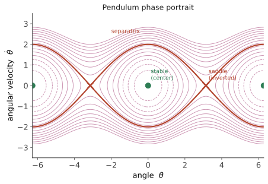

进阶 I · 非线性控制
层次：研究生核心 ｜ 🔗 前置：动力系统与相图（数学站）。 第二页说过：经典控制的整座大厦建立在线性化之上。但真实系统总是非线性的，而且有些非线性本质上无法线性化——饱和、摩擦、间隙，以及那些只在非线性系统中才存在的现象。本页讲非线性系统特有的行为，以及处理它们的主要工具。
一、非线性系统特有的现象
线性系统的性质极其"温和"：叠加成立、稳定性与初值无关、唯一平衡点、响应形状不随幅度变化。非线性系统全都不满足：
① 多个平衡点：单摆有稳定（下垂）与不稳定（倒立）两个平衡点。"系统是否稳定"这个问题本身必须改成"在哪个平衡点附近、多大范围内稳定"——引出吸引域（region of attraction）概念。
② 极限环：孤立的周期轨道，不依赖初始条件（线性系统的振荡幅度由初值决定，非线性极限环则收敛到固定幅度）。范德波尔振荡器是标准例子；实际中，带间隙或摩擦的伺服系统常出现极限环——表现为"稳不下来的小幅抖动"，这是伺服调试中的常见故障。
③ 有限逃逸时间：\(\dot{x}=x^2\) 在有限时间内发散到无穷（线性系统只能指数发散，永远需要无限时间）。
④ 幅值依赖：小信号稳定不代表大信号稳定（这正是线性化只在工作点附近有效的原因）。
⑤ 混沌：确定性系统产生对初值极度敏感的不可预测行为。

二、工程中最常见的非线性
理论上的奇异现象固然有趣，但工程师日常遇到的主要是这几种：
| 非线性 | 表现 | 后果 |
|---|---|---|
| 饱和 | 执行器到限 | 积分饱和（第六页）、性能受限 |
| 死区 | 小输入无响应 | 静差、极限环 |
| 库仑摩擦 | 静摩擦大于动摩擦 | 爬行（stick-slip）、定位不准 |
| 间隙/回差 | 齿轮、丝杠的空程 | 极限环、换向误差 |
| 迟滞 | 输出取决于历史（磁滞、压电） | 定位重复性差 |
摩擦补偿是精密运动控制的经典难题：静摩擦使系统在低速时"走走停停"（爬行）。常用手段包括摩擦模型前馈补偿（LuGre 模型等）、加抖动信号（dither）、或用高刚度反馈"硬压"。没有通用完美解，通常需要针对具体机械结构调试。
三、Lyapunov 方法：不解方程判断稳定性
核心思想（极其优雅）：找一个"广义能量函数" \(V(x)\)，若它沿系统轨迹持续下降，则系统必然趋向能量最低点——即稳定。
Lyapunov 直接法：若存在 \(V(x)\) 满足
- \(V(0)=0\)，且 \(V(x)>0\)（正定）；
- \(\dot{V}(x) = \nabla V \cdot f(x) \le 0\)（沿轨迹不增），
则平衡点稳定；若 \(\dot{V}<0\)（严格负定）则渐近稳定。
它的威力在于不需要解微分方程——只需检验一个不等式。对非线性系统这至关重要，因为解析解通常不存在。
它的困难在于找 \(V\)：没有通用构造法。常用套路——物理能量（机械系统的动能+势能是天然候选）、二次型 \(V=x^TPx\)（对线性系统，\(P\) 由 Lyapunov 方程给出）、以及平方和（SOS）规划等数值方法（近年可用凸优化自动搜索多项式 Lyapunov 函数，🔗 grad-math 优化线）。
LaSalle 不变集原理：当 \(\dot{V}\le0\) 但不严格负定时，可通过分析 \(\dot V = 0\) 的集合来判断收敛性——这在实际中极常用，因为严格负定往往难以达到。
Lyapunov 不只是分析工具，更是设计工具：反步法（backstepping）通过递归地构造 Lyapunov 函数来设计控制律，是非线性控制设计的主流方法之一。
四、几种主要的设计方法
① 反馈线性化：通过坐标变换与非线性反馈，精确抵消系统的非线性，使闭环成为线性系统。
- 优点：设计后可用全部线性工具；
- 致命弱点：依赖精确的模型抵消——模型有误差时抵消不完全，残余非线性可能造成严重问题。这与第四页"零极点对消"的陷阱是同一类风险；
- 还需注意内动态（零动态）：被抵消后系统内部可能残留不可观的动态，若它不稳定（非最小相位），方法失效——第二页的右半平面零点在非线性版本中再次出现。
② 滑模控制（SMC）：设计一个滑模面 \(s(x)=0\)，用高增益切换控制把状态强行"压"到面上并沿其滑动。
- 优点：对匹配不确定性与扰动有极强的鲁棒性（这是它最大的卖点），且设计相对简单；
- 代价：切换造成抖振（chattering）——高频振荡会激发未建模动态、磨损执行器、产生噪声。缓解手段有边界层（用饱和函数代替符号函数，牺牲部分精度）、高阶滑模（super-twisting）；
- 工业现实：抖振问题使纯滑模在很多场合难以直接应用，但滑模观测器（用于状态估计，无执行器磨损问题）应用相当广泛——例如第十二页的电机无位置传感器控制。这是一个"理论的某一半比另一半更实用"的典型例子。
③ 增益调度：在多个工作点线性化并各设计一个控制器，按工作点插值切换。
- 工业上最实用的"非线性"方法，广泛用于航空（随高度马赫数调度）、发动机、过程控制；
- 注意事项：切换过程本身可能不稳定（即使每个局部控制器都稳定！），需保证慢变化或使用有稳定性保证的构造（如 LPV 方法）。
④ 无源性与能量成形：利用系统的物理结构（能量守恒、无源性）设计控制器，如机器人的 PD + 重力补偿。这类方法有很好的鲁棒性与物理直观，在机器人学中广泛使用（第十九页）。
五、实用判断：什么时候真的需要非线性控制
诚实的工程判断（承导论的理论—实践落差）：
大多数情况下不需要——线性控制 + 足够裕度 + 抗饱和 + 增益调度，已能覆盖绝大部分工业需求。
确实需要的场合：
- 工作范围极大，单个线性化模型无法覆盖（机器人大范围运动、飞行器全包线）；
- 本质非线性主导（如强摩擦、间隙显著的精密定位）；
- 对性能要求逼近物理极限（航天、高端伺服）；
- 系统本身不稳定且非线性强（倒立摆类、某些飞行器）。
滑模与反馈线性化在论文中的出现频率，远高于它们在工业现场的部署频率——这不是说它们没用，而是说引入它们需要有明确的理由：额外的复杂度、调试难度与维护成本，必须被换来的性能所证明。
六、要点
- 非线性系统有线性系统不存在的现象：多平衡点、极限环、有限逃逸、幅值依赖、混沌；
- 工程中最常见的是饱和、死区、摩擦、间隙、迟滞——它们才是日常敌人；
- Lyapunov 方法不解方程判稳定，且经反步法成为设计工具；难点在于构造 \(V\)；
- 反馈线性化依赖精确抵消（与零极点对消同类风险）；滑模鲁棒但抖振，其观测器版本更实用；
- 增益调度是工业上最实用的非线性手段；
- 引入非线性方法需要明确理由——复杂度必须被性能收益证明。
下一页：既然模型总是错的，能不能把"模型有多错"直接写进设计？鲁棒控制——从 Doyle 反例出发的一整套理论。